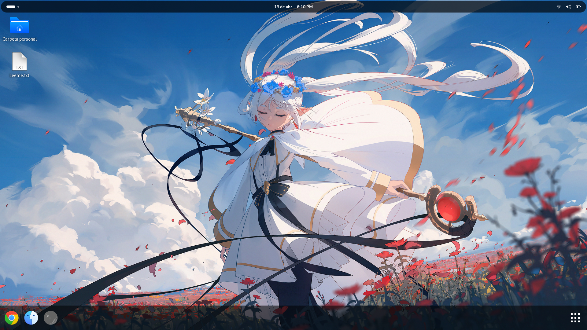

Conoce
PerfectOS
Sin bloatware, sin telemetría, sin IA, solo tú y tu flujo de trabajo en un entorno perfectamente equilibrado.

Nuestra
Mision
PerfectOS está diseñado para resolver la mayoría de los problemas comunes que generan rechazo hacia las distribuciones GNU/Linux. Nuestra misión es ofrecer un entorno seguro, ligero, estable, hermoso y automatizado que sirva como una alternativa confiable a las distribuciones tradicionales. Buscamos facilitar el uso de Linux en el día a día, brindando al usuario un control total sobre su sistema.
Experiencia de Usuario
Tienda de aplicaciones
Utiliza GNOME Software para obtener tus aplicaciones favoritas, es una herramienta de gestión simple e intuitiva, con soporte para APT, Flatpak y la instalación automatica de archivos .deb descargados de Internet.
Debian Trixie
La estabilidad legendaria de los repositorios Debian, lista para el uso diario.
Aplicaciones necesarias preinstaladas
Incluye todo lo necesario para el uso diario, manteniendo un tamaño mínimo de 4.97 GB después de la instalación.
Consumo de ram mínimo garantizado en el primer arranque.
Procesador
Arquitectura x86_64 Dual Core 2.0GHz o superior.
Memoria RAM
2GB DDR2 + 2GB SWAP
Gráficos
Resolucion 1024x768 y tarjeta grafica compatible con aceleración OpenGL.
Únete a la Evolución
Tu apoyo nos ayuda a mantener y financiar el desarrollo continuo de esta obra de arte técnica.